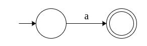
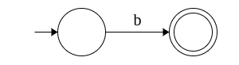
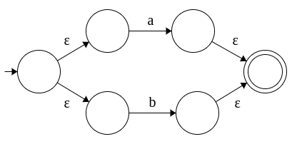
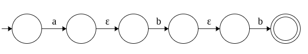
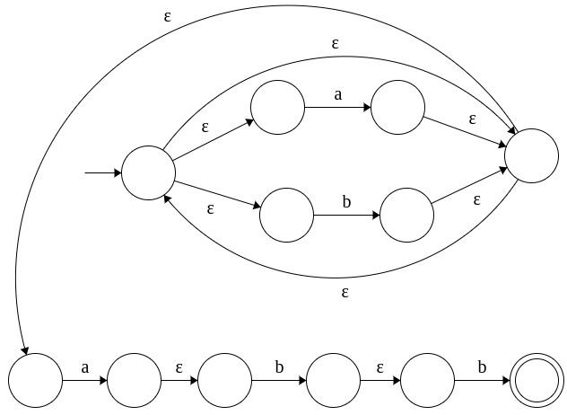

| Prev | Next |
Regex - NFA Equivalence
We have seen how to construct DFAs, NFAs, ε-NFAS and regular expressions for various problems so far. We also established the equivalence of DFA and NFA/ε-NFA by showing an algorithmic approach to convert it into its equivalent DFA. We noted that it is easier to specify a NFA/ε-NFA compared to DFA. And it is even easier to specify a regular expression compared to NFA.
Now, we will show the equivalence of regular expression and DFA/NFA/ε-NFA by converting regular expression to its equivalent NFA. And we can see that the strings generated by the language defined a regular expression are exactly the strings accepted its equivalent NFA. As earlier, we will do this with an example.
Strings ending with abb. Σ = {a, b}.
The regular expression is given as: (a+b)* abb. Lets turn this into an ε-NFA. We will first design a NFA for each symbol and then combine them systematically using ε transitions.
| Regular Expression | Equivalent NFA |
| a |  |
| b |  |
| a+b |  |
| (a+b)* |  |
| abb |  |
| (a+b)* abb |  |
The obtained ε-NFA accepts the language generated by the regular expression (a+b)*abb. The ε-NFA can be converted to DFA in the same manner described in NFA-DFA equivalence and minimized to its smallest DFA using DFA minimization algorithm already discussed. This is one way to ascertain that the DFA obtained is the same.
To summarize,
1. Concatenation (binary . operation) is achieved by adding an ε-transition from the final state of first NFA (which now ceases to be the final state) to the initial state of the second NFA.
2. Alternation (binary + operation) is achieved by adding a new start state and a new final state. The new start state connects to the start states of both NFAS by ε-transitions and the final states of both the NFAs connect to the new final state by ε-transitions. Note that the old start and final states cease to be start and final states anymore.
3. Kleene star (unary *) is achieved by adding two ε-transitions: one from the start state of the NFA to the final state and another from the final state of the NFA back to the start state.
4. Unary + operation is achieved by adding a single ε-transition from the final state to the start state (to facilitate one are more times).
5. Unary ? operation is achieved by adding on ε-transition from start state to the final state (to facilitate zero or one time).
DFA, NFA, ε-NFA and regular expressions are equivalent in power in describing regular languages.
As exercises, you can pick and convert some complex regular expressions discussed in the previous section. Also, to get a complete practice, you can further convert the obtained ε-NFA to DFA to minimal DFA. This will give a firm command over all the topics discussed thus far.